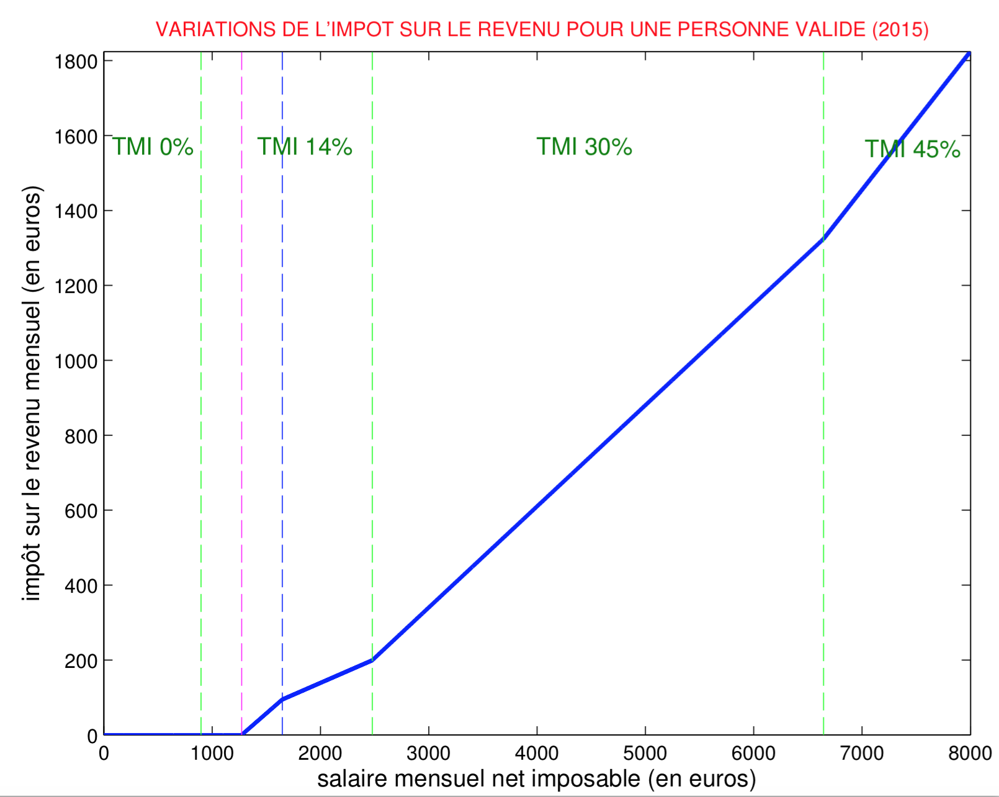
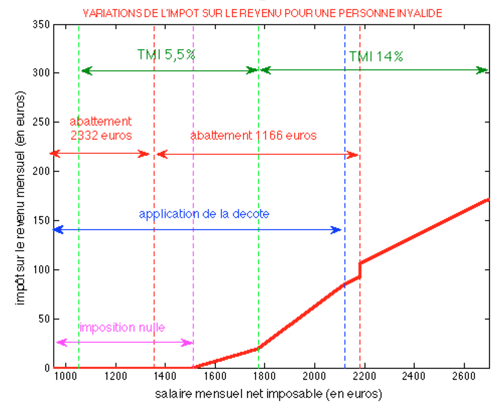

A vos calculettes !

Pour les impatients, si vous êtes célibataire sans enfant et que vous percevez un salaire mensuel net imposable (cf. Bulletin de paie), le calcul de votre impôt annuel 2015 sera
Pour une personne valide :
\[\text{impôt annuel}=\left\{\begin{array}{l}0~\text{si}~\text{salaire}<1272\\ 12\times (0.251\times \text{salaire}-319)~\text{si}~1272<\text{salaire}<1647\\ 12\times (0.126\times \text{salaire}-113)~\text{si}~1647<\text{salaire}<2478\\ 12\times (0.27\times \text{salaire}-470)~\text{si}~2478<\text{salaire}<6643 \end{array}\right.\]
Pour une personne handicapée (à 80% et +) :
\[\text{impôt annuel}=\left\{\begin{array}{l}0~\text{si}~\text{salaire}<1829\\12\times (0.251\times \text{salaire}-460)~\text{si}~1829<\text{salaire}<2194\\ 12\times (0.126\times \text{salaire}-113)~\text{si}~2195<\text{salaire}<3717\\ 12\times (0.27\times \text{salaire}-470)~\text{si}~3717<\text{salaire}<6806 \end{array}\right.\]
ou bien vous pouvez simplement regarder ces 2 graphiques :
{kind=link}
{kind=link}
Si vous êtes marié avec ou sans enfant vous pouvez suivre les étapes de calcul que je décris ci-dessous. Pas mal de choses ont changé depuis l’année dernière (suppression de la première tranche d’imposition, doublement de la décote, etc), cet article vous explique tout ! Il comporte 3 parties :
- Partie I : fonctionnement de l’impôt sur le revenu pour une personne valide
- Partie II : explications des abattements pour une personne handicapée
- Partie III : comparaison des impôts valide/handicapé, 2014/2015
(*) les changements par rapport à l’imposition de 2014 seront indiqués en rouge.
Partie I : Comprendre le fonctionnement général de l’impôt sur le revenu
Le site des impôts met à disposition un simulateur bien pratique pour estimer l’impôt sur les revenus 2014 à payer en 2015, sur lequel on se basera pour vérifier nos calculs :
Simulateur de l’impôt sur le revenu
Dans toute la suite on supposera remplis les champs suivants de la déclaration :
- Personne célibataire (C)
- Vivant en métropole
- Année de naissance
- Traitements, salaires : “indiquez vos seuls revenus d’activité” (1AJ)
Autrement dit on suppose dans un premier temps que la personne n’a pas d’autres types de revenus (foncier, etc) que les revenus salariaux. Ce qui, nous allons voir, n’est déjà pas un calcul si simple…
Exemple : En 2014, Pierre gagnait le smic, Paul gagnait 1500 € et Jacques gagnait 2000 € net imposable par mois. Quel impôt sur le revenu devront-ils payer en 2015 ?
Décrivons étape par étape le calcul des impôt :
Etape n°1 : Calcul du revenu brut (RB)
Les revenus perçus peuvent provenir de plusieurs catégories de revenus. Ces revenus sont dits “catégoriels”.
Pour calculer le revenu brut, vous devrez faire l’addition sur l’année des :
- Salaires perçus (salaire net imposable)
- Revenus fonciers (immobilier locatif. Vous pourrez généralement déduire les charges liées au bien)
- Pensions perçues
- Bénéfices non commerciaux
- Bénéfices agricoles
- Bénéfices commerciaux
- Plus-values immobilières, sur valeurs mobilières, sur biens meubles, professionnelles
- Rémunérations des dirigeants de société
Dans notre cas puisque l’on considère uniquement les revenus issus des salaires perçus, le revenu brut se réduit aux salaires imposables. Le salaire imposable est mentionné sur votre bulletin de paie (cf. Comprendre son bulletin de paie).
–> Que faut-il déclarer aux impôts dans la case 1AJ ?
Exemple : Pierre gagne le smic, dont le brut s’élève à 1457,52 € et le net à 1135,99 €, ce qui en net imposable représente 1177,53 € par mois d’après mon précédent article Comprendre son bulletin de paie
Revenus que Pierre doit déclarer = 12*1177,53 = 14130 €
Revenus que Paul doit déclarer = 12*1500 = 18000 €
Revenus que Jacques doit déclarer = 12*2000 = 24000 €
Remarque : on ignore la virgule en tronquant le résultat.
–> Est-ce le montant considéré par les impôts ?
Non. Les salaires imposables du point de vue des impôts est le salaire imposable de votre fiche de paie auquel est appliqué un abattement de 10% en raison des frais professionnels1. Cet abattement fiscal est au minimum de 426 € et au maximum de 12 157 €.
1 Article 182 A bis, alinéa 2 - lien
Remarque : si vous estimez vos frais professionnels (déplacements, etc) plus élevés que la valeur de ces 10% il vous est possible à la place de déclarer vos frais réels.
Dans nos exemples on applique les 10% d’abattement, ce qui revient à multiplier par 0.9
revenu brut = 0.9 x 12 x salaire net imposable
Exemple : Pierre gagne le smic, en net imposable cela représente 1177,53 € par mois d’après mon précédent article “Comprendre son bulletin de paie”.
revenu brut de Pierre = 0.9 x 12 x 1177,53 = 0.9 x 14130 = 12717 €
Remarque : on ignore la virgule en tronquant le résultat.
De même on obtient :
revenu brut de Paul = 0.9 x 12 x 1500 = 16200 €
revenu brut de Jacques = 0.9 x 12 x 2000 = 21600 €
Vérification avec le simulateur.
Remarque : Du Revenu Brut, on déduit les éventuels déficits globaux des années précédentes, pour obtenir le Revenu Brut Global (RBG). On considère ces éventuels déficits nuls dans nos exemples.
Etape n°2 : Calcul du revenu net global imposable (RNGI)
Du Revenu Brut (Global), on soustrait les charges déductibles pour obtenir le Revenu Net Global (RNG). Ces charges peuvent être les suivantes :
- Déficit foncier (immobilier locatif)
- Pension alimentaire aux ascendants (uniquement si celle-ci est considérée comme vitale pour le bénéficiaire)
- Pension alimentaire aux descendants majeurs dans la limite de 5 698 € par enfant.
- Perte de capital lié à une création d’entreprise
Enfin pour obtenir le Revenu Net Global Imposable on déduit certains abattements (pour enfants à charge ayant fondé un foyer distinct, pour personnes âgées et invalides).
Exemple : Pour Pierre, Paul, Jacques aucune charge de ce type n’a lieu, donc :
revenu net global imposable de Pierre = 12717 €
revenu net global imposable de Paul = 16200 €
revenu net global imposable de Jacques = 21600 €
Vérification avec le simulateur.
Etape n°3 : Calcul du nombre de parts fiscales
Le calcul du nombre de parts fiscales s’effectue en 2 étapes.
Parts fiscales liées à la situation familiale
1 part fiscale si vous êtes :
- Célibataire
- Concubin
- Divorcé
- Veuf (si pas d’enfant à charge)
2 parts fiscales si vous êtes :
- Marié
- Pacsé
- Veuf avec enfant(s) à charge
Parts fiscales liées au nombre d’enfants
Les parts fiscales liées aux enfants s’ajoutent à la ou les part(s) de la situation familiale.
Fonctionnement : 0,5 part par enfant pour les 2 premiers puis 1 part par enfant à compter du 3ème.
En résumé :
- 1 enfant : 0.5 part
- 2 enfants : 1 part
- 3 enfants : 2 parts
- 4 enfants : 3 parts
- etc.
Si par exemple vous êtes marié avec 2 enfants : 2 parts (situation familiale) + 1 part (2 enfants : 0,5 + 0,5) = 3 parts fiscales
Majoration du nombre de parts fiscales
Certaines situations donnent droit à une demi part supplémentaire (+0,5) :
- Parent isolé : vous vivez et élevez seul votre enfant au 1er janvier de l’année d’imposition ;
- Invalidité : vous êtes invalide à plus de 80 % et avez la carte d’invalidité ;
- Ancien combattant ;
- Veuve de guerre ;
- Vous vivez seul au 1er janvier et avez élevé seul un enfant pendant au moins 5 ans.
Attention : les demi parts ne se cumulent pas entre elles sauf en présence de plusieurs invalides dans le foyer.
Par exemple, si vous êtes invalide et ancien combattent à la fois, vous n’obtenez qu’une seule demi part supplémentaire (et non 1 part).
Exemple : Pour nos protagonistes Pierre, Paul, Jacques qui sont célibataires, une seule part est comptée.
Etape n°4 : Calcul du quotient familial
Il suffit simplement de diviser le revenu net global imposable par le nombre de parts :
Quotient familial = Revenu net global imposable / nombre de parts
Exemple : Dans notre cas puisque Pierre, Paul, Jacques n’ont qu’une seule part on a
Quotient familial de Pierre = 12717 €
Quotient familial de Paul = 16200 €
Quotient familial de Jacques = 21600 €
Etape n°5 : Connaître sa Tranche Marginale d’Imposition (TMI)
C’est avec le quotient familial que vous pourrez connaître votre Tranche Marginale d’imposition. Si par exemple votre quotient familial est de 10 000 € alors vous aurez un TMI de 14%. Tous vos revenus (ou plutôt quotient familial qui est le revenu réduit par les parts fiscales) seront imposées à 14%. Pour 30 000 euros de quotient familial, une partie sera imposée à 14 % et l’autre excédant 26 764 € à 30 %.
(Depuis 2015 la première tranche, anciennement à 5,5%, a été supprimée)
Exemple : Tous les quotients familiaux calculés se situent dans la tranche [9690,26 764]
Quotient familial de Pierre = 12717 € –> TMI = 14%
Quotient familial de Paul = 16200 € –> TMI = 14%
Quotient familial de Jacques = 21600 € –> TMI = 14%
Etape n°6 : Calcul de l’impôt brut
Les taux liés aux tranches marginales d’imposition (TMI) servent à découper votre quotient familial (revenu réduit par le nombre de part(s) fiscales) en différentes tranches qui seront chacune imposée à un taux différent (barème de l’impôt). Pour expliquer simplement, on découpe votre revenu en “morceaux” et chacun d’eux est imposé avec un taux différent.
Exemple : Calcul de l’impôt brut de Pierre
- Pour la tranche 1 : de 0 à 9 690 € donc 9 690 x 0 = 0
- Pour la tranche 2 : de 9 690 à 26 764 € soit (12 717-9 690)x0.14 = 424 €
- Pour la tranche 3 : le quotient familial de l’exemple ne va pas jusqu’à cette 3 ème tranche (12 717 € < 26 764).
Une fois les tranches calculées, il suffit de les additionner et de les multiplier par le nombre de parts soit :
impôt brut de Pierre = (0 + 424) x 1 = 424 €
De même pour les deux autres, Paul dans la tranche 3 = (16 200-9 690) x 0.14 = 911 € et Jacques dans la tranche 3 = (21 600-9 690) x 0.14 = 1667 €, donc :
impôt brut de Paul = (0 + 911) x 1 = 911 €
impôt brut de Jacques = (0 +1667) x 1 = 1667 €
Vérification avec le simulateur.
##Etape n°7 : Calcul de l’impôt net
Si l’impôt brut obtenu est inférieur à 1135 €, alors on applique une décote (réduction d’impôt) qui se calcule de la manière suivante :
decote = 1135 - impôt brut
(Depuis 2015 cette différence n’est plus divisée par 2 comme c’était le cas en 2014)
Exemple : On calcule les décotes de Pierre, Paul et Jacques
decote de Pierre = 1135 - 424 = 711 €
decote de Paul = 1135 - 911 = 224 €
Pas de décote pour Jacques car impôt brut = 1667 € > 1135 €
Comme la decote de Pierre est supérieure à 424 € on la sature à 424 €.
Vérification par le simulateur.
Finalement l’impôt net est donné par :
impôt net = impôt brut - décote
Exemple : Calcul de l’impôt net de Pierre, Paul et Jacques.
impôt net de Pierre = 424 - 424 = 0 €
impôt net de Paul = 911 - 224 = 687 €
impôt net de Jacques = 1667 €
Vérification par le simulateur.
Courbe d’imposition pour une personne célibataire valide
Ci-dessous on représente la “fonction d’imposition”, c’est-à-dire l’impôt sur le revenu à payer (ramené sur un mois) en fonction du salaire mensuel net imposable perçu.
Sur une plage de salaires plus conséquente :

On constate les choses suivantes :
- Jusqu’à un salaire mensuel net imposable < 1272 € –> pas d’impôt à payer
- De 0 € à 897 € –> TMI à 0%
- De 897 € à 2478 € –> TMI à 14%
- De 2478 € à 6643 € –> TMI à 30%
- De 6643 € à 14070 € –> TMI à 45%
- A partir de 1647 € –> décote nulle
La démonstration de ces chiffres est donnée en Annexe 1.
Remarque : Attention le TMI ne signifie pas qu’on impose les revenus à ce taux ! Il définit juste la dernière tranche d’imposition des revenus découpés en morceaux (voir Etape n°6)
Partie II : Spécificité de calcul lié à l’invalidité, quels effets sur l’impôt à payer ?
On suppose désormais remplis les champs suivants de la déclaration :
- Personne célibataire (C)
- Vivant en métropole
- Année de naissance
- Traitements, salaires : “indiquez vos seuls revenus d’activité” (1AJ)
- Titulaire d’une carte d’invalidité d’au moins 80% (P)
Nos chers protagonistes Pierre, Paul et Jacques sont maintenant considérés comme invalide à 80%, et ont donc cochés la case (P).
{kind=link}
Qu’est-ce qui change en ayant coché la case (P) ?
- Premièrement un abattement spécial invalidité vient s’appliquer sur le Revenu Net Global pour donner le Revenu Net Global Imposable dont on parlait plus haut à l’étape n°2 :
Revenu Net Global Imposable = Revenu Net Global - abattement spécial
–> Quel est cet abattement spécial ?
D’après l’article 157 bis du code des impôts2, si le Revenu Net Global est inférieur à 14 710 € alors on applique un abattement de 2344 €, et s’il est compris entre 14 710 € et 23 700 € on applique un abattement de 1172 €.
2 Article 157 bis du code des impôts - lien
Exemple : A l’étape n°2 on rappelle que le Revenu Net Global de Pierre, Paul, Jacques est respectivement 12717 €, 16200€ et 21600€. Pierre a un Revenu Net Global inférieur à 14710 €, il bénéficiera donc d’un abattement spécial du à son invalidité de 2344 €. Tandis que ses compères dont le Revenu Net Global se situe entre 14710 € et 23700 € bénéficieront d’un abattement de 1172 €.
revenu net global de Pierre = 12717 - 2344 = 10 373 €
revenu net global imposable de Paul = 16200 - 1172 = 15 028 €
revenu net global imposable de Jacques = 21600 - 1172 = 20 428 €
3 Article 195 du code général des impôts - lien
Exemple : Recalcul du quotient familial avec un nombre de parts à 1,5
Quotient familial de Pierre = 10373/1,5 = 6915€
Quotient familial de Paul = 15028/1,5 = 10 018 €
Quotient familial de Jacques = 20428/1,5 = 13 618 €
Cela a pour effet d’abaisser le quotient familial, et on remarque que celui de Pierre a changé de TMI en passant de 14% à 0% ! Ces trois diminutions de quotient familial réduit un peu l’impôt brut, voyons un peu la somme des tranches :
Pierre : (9690-6915) x 0% = 0 €
Paul : (9690-0) x 0%+(10018-9690) x 14% = 46 €
Jacques : (9690-0) x 0%+(13618-9690) x 14% = 550 €
Ainsi en multipliant par le nombre de part on obtient le nouvel impôt brut :
impôt brut de Pierre = 0 x 1,5 = 0 €
impôt brut de Paul = 45 x 1,5 = 69 €
impôt brut de Jacques = 550 x 1,5 = 825 €
On recalcule également les décotes puisque ces trois impôts bruts sont maintenant tous sous le seuil des 1135 € :
décote de Pierre = 1135-0 = 1135 > 0 => 0 €
décote de Paul = 1135-69 = 1066 > 69 => 69 €
décote de Jacques = 1135-825 = 310 €
Finalement :
impôt net de Pierre = 0 €
impôt net de Paul = 0 €
impôt net de Jacques = 825 - 310 = 515 €
- Enfin troisièmement, une chose importante dont on n’a pas encore parlé, est le plafonnement du quotient familial4.
4 Plafonnement des effets du quotient familial sur le site impotgouv - lien
En effet, les deux points précédents : existence d’un abattement spécial + demi part supplémentaire pour une personne invalide, procurent une baisse du quotient familial et donc de l’impôt brut par rapport au calcul effectué sur les mêmes revenus d’une personne valide. Toutefois afin de limiter les effets de ces avantages, la différence d’impôt entre ces deux modes de calcul est plafonné à 1508 € :
impôt brut d’une personne valide - impôt brut d’une personne invalide < 1508 €
Dit autrement si on désigne pour des revenus identiques les quantités suivantes :
A = impôt brut calculé dans le cas d’invalidité
B = impôt brut calculé dans le cas valide - 1508 €
Alors la condition de plafonnement se réécrit : A < B
Exemple : Vérification du plafonnement pour Pierre, Paul, Jacques
Pierre : impôt brut invalide = 0 €, impôt brut valide = 0 € –> 0-0 < 1508 [OK]
Paul : impôt brut invalide = 0 €, impôt brut valide = 687 € –> 687-0 < 1508 [OK]
Jacques : impôt brut invalide = 515 €, impôt brut valide= 1667 € –> 1667-515<1508 [OK]
Si la condition de plafonnement est vérifiée, on conserve l’avantage du calcul dans le cas d’invalidité :
Si A <= B alors impôt brut retenu = A
Si au contraire la condition n’est pas vérifiée, on retient l’impôt brut dans le cas valide moins le plafond de 1508 € :
Si A > B alors impôt brut retenu = B
Attention : ceci est valable plus généralement pour tout calcul avantageux lié à des demi parts supplémentaires, et le plafond correspond à 1508 € par demi parts supplémentaires. Cependant dans le cas de l’invalidité, ce plafond est réévalué à 1504 € de plus ! C’est ce qu’on appelle une réduction d’impôt complémentaire.5 Plus précisément :
5 Article 197 du code général des impôts - lien
Si B-A > 1504 alors impôt brut retenu = B - 1504 = impôt brut valide - 3012 €
Courbe d’imposition d’une personne célibataire invalide

On peut tracer la courbe pour des salaires plus importants pour la visualiser dans son ensemble :
On constate les choses suivantes :
- Jusqu’à un salaire mensuel net imposable < 1829 € –> pas d’impôt à payer
- De 0 € à 1562 € –> TMI à 0%
- De 1562 € à 3717 € –> TMI à 14%
- De 3717 € à 9965 € –> TMI à 30%
- De 9965 € et plus € –> TMI à 45%
- A partir de 2194 € –> décote nulle + fin abattement 1172 €
La démonstration de ces chiffres est donnée en Annexe 1.
Partie III : comparaison des impôts valide/handicapé, 2014/2015
Comparaison des impôts payés par une personne valide et invalide
Si on fusionne les deux courbes d’impositions sur un même graphique on obtient :
Comparaison des impôts payés entre 2014 et 2015
La suppression de la première tranche d’imposition ainsi que le doublement de la décote semble avoir profité à tout le monde. Traçons la différence des courbes pour connaître l’économie annuelle réalisée :
Avec un zoom sur les salaires moyens :
On remarque que le montant maximal d’économie possible s’élève à 350 euros environ, ce qui est conforme aux résultats annoncés par le gouvernement (voir ici). Notez que ce n’est qu’une valeur maximale qui ne concerne qu’une plage de salaire étroite centrée en 1270 euros. C’est toutefois une bonne nouvelle pour les personnes de faibles revenus qui vont faire quelques économies (autour de 1250 euros et moins pour les personnes valides jusqu’à 1800 euros pour les personnes handicapées).
Remarque : on constate aussi un “pic” étrange aux alentours de 2200 euros, ceci est du au fait que le salaire pour lequel se produit la fin de l’abattement des 1172 euros est sensiblement différent de celui (1166 euros) de l’année précédente. Pour être tout à fait exact il aurait fallu que j’applique à la courbe de 2014 le taux d’inflation, mais cela n’aurait visuellement rien changé si ce n’est la disparition du pic en question.
Annexe : Calcul des points critiques du graphique et mise en place d’un calcul d’imposition simplifié (donné en intro).
Commençons par expliciter l’algorithme de calcul aux vues des étapes décrites précédemment. Etant donné les constantes de 2015 fournies :
imp_min = 1135; % impôt min
inv = 1; % invalidité ou non
N = 1 + 0.5*inv; % nombre de parts
fisc_min = 426; % abattement fiscal minimal
fisc_max = 12157; % abattement fiscal maximal
a_max = 2344; % abattement spécial maximal (inv)
a_min = 1172; % abattement spécial maximal (inv)
r_max = 23700; % revenu spécial net gl maximal (inv)
r_min = 14710; % revenu spécial net gl minimal (inv)
TRI_1 = 9690; TMI_1 = 0; % tranche et taux d'imposition 1
TRI_2 = 26764; TMI_2 = 0.14; % tranche et taux d'imposition 2
TRI_3 = 71754; TMI_3 = 0.3; % tranche et taux d'imposition 3
TRI_4 = 151956;TMI_4 = 0.41; % tranche et taux d'imposition 4On définit les variables suivantes :
\(S\) : salaire mensuel net imposable
\(fisc\) : abattement fiscal
\(R_G\) : revenus net global
\(a_{spec}\) : abattement spécial invalidité
\(R_I\) : revenus net imposable
\(Q_f\) : quotient familial
\(Imp_B\) : impôt brut
\(dec\) : décote
\(imp_N\) : impôt net
Si on suit rigoureusement les étapes précédemment décrite le problème se formule ainsi :
- Revenus net global : puisque \(fisc=\min (\max (fisc_{min},12\times 0.1\times S),fisc_{max})\) \[R_G=12S-fisc\]
- Abattement spécial : \[a_{sec}=\left\{\begin{array}{l}a_{max}~\text{si}~R_G< r_{min}\ a_{min}~\text{si}~r_{min}< R_G< r_{max}\end{array}\right.\]
- Revenus imposable net : \[R_I=R_G-a_{spec}\times inv\]
- Quotient familial : \[Q_f=\frac{R_I}{N}\]
- Impôt brut : soit \(i_0\) l’indice tel que \(TRI_{i_0}<Q_f<TRI_{i_0+1}\) \[imp_B=N\sum_{k=2}^{i_0}(TRI_k-TRI_{k-1})\times TMI_{k-1}+N(Q_f-TRI_{i_0})\]
- Décote : \[dec=\left\{\begin{array}{l}imp_{min}-imp_B~\text{si}~imp_{min}>imp_B\ 0~\text{sinon}\end{array}\right.\]
- Impôt net : \[imp_{N}=\max(imp_B-dec,0)\]
Soit \(f\) la fonction qui exécute cet algorithme, c’est-à-dire \[imp_N=f(S)\]
Désignons par \(A_1\), \(B_1\), \(C_1\) et \(D_1\) (en bleu) les 4 points critiques de changement de pentes de la courbe correspondant à la personne valide ; et \(A_2\), \(B_2\), \(B_2'\), \(C_2\), \(D_2\) (en rouge) ceux de la courbe correspondant à la personne handicapée.
Cherchons leurs coordonnées :
- Salaire minimum où l’imposition n’est plus nulle
 , d’où les lignes verticales rouge et bleue confondues.
, d’où les lignes verticales rouge et bleue confondues.
A partir de là on a tous les éléments pour calculer les coordonnées des points voulus : \[\begin{array}{c}A_1=(1272,0)\\ B_1=(1647,f(1647))=(1647,94.4) \\ C_1=(2478,f(2478))=(2478,199.2) \\ D_1=(6643,f(6643))=(6643,1323,7)\end{array}\]
\[\begin{array}{c}A_2=(1829,0)\\ B_2=(2194,f(2194))=(2194,91.8) \\ B_2'=(2195,f(2195))=(2195,107)\\ C_2=(3717,f(3717)) = (3717,298.8) \\ D_2=(6806,f(6806)) = (6806,1132.8)\end{array}\]
L’étape suivante consiste à calculer l’équation des portions de droite joignant deux points consécutifs. Exemple avec la droite \(d(A_1,B_1)\) : \(y=ax+b\) joignant \(A_1\) et \(B_1\) on a \[\left\{\begin{array}{l}a=\frac{y_{B_1}-y_{A_1}}{x_{B_1}-x_{A_1}}=\frac{94.4-0}{1647-1272}\approx 0.251\\ b=y_{B_1}-ax_{B_1}=94.4-a\times 1647=-319\end{array}\right.\]
Ainsi pour un salaire \(S\) d’une personne valide compris entre 1272 € et 1647 €, l’impôt mensuel que celle-ci devra payer est de \[impot_{[A_1,B_1]}(S)=0.251\times S-319\]
De même on trouve : \[\begin{array}{l}impot_{[B_1,C_1]}(S)=0.126\times S-113\\ impot_{[C_1,D_1]}(S)=0.27\times S-470 \end{array}\]
On procède de manière identique pour les portions de droites de la courbe d’une personne invalide : \[\begin{array}{l}impot_{[A_2,B_2]}(S)=0.251\times S-460 \\ impot_{[B2',C2]}(S)=0.126\times S-170\\ impot_{[C_2,D_2]}(S)=0.27\times S-704 \end{array}\]
En conclusion :
Pour une personne valide : \[\text{impôt annuel}=\left\{\begin{array}{l}0~\text{si}~\text{salaire}<1272\\12\times (0.251\times \text{salaire}-319)~\text{si}~1272<\text{salaire}<1647\\ 12\times (0.126\times \text{salaire}-113)~\text{si}~1647<\text{salaire}<2478\\ 12\times (0.27\times \text{salaire}-470)~\text{si}~2478<\text{salaire}<6643 \end{array}\right.\]
Pour une personne invalide : \[\text{impôt annuel}=\left\{\begin{array}{l}0~\text{si}~\text{salaire}<1829\\12\times (0.251\times \text{salaire}-460)~\text{si}~1829<\text{salaire}<2194\\ 12\times (0.126\times \text{salaire}-113)~\text{si}~2195<\text{salaire}<3717\\ 12\times (0.27\times \text{salaire}-470)~\text{si}~3717<\text{salaire}<6806 \end{array}\right.\]